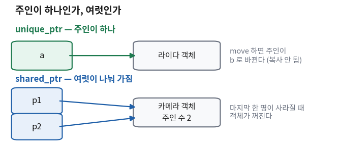
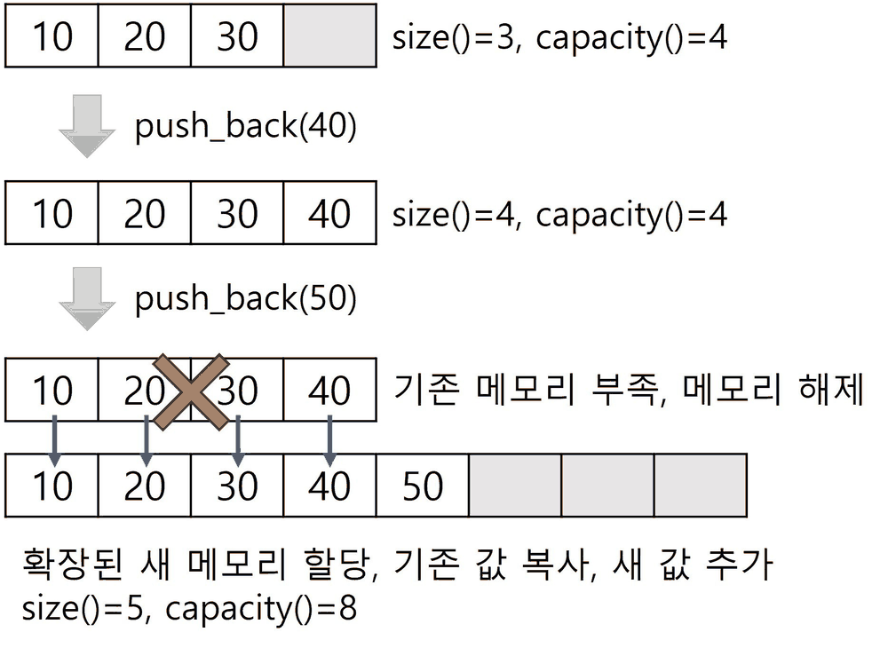
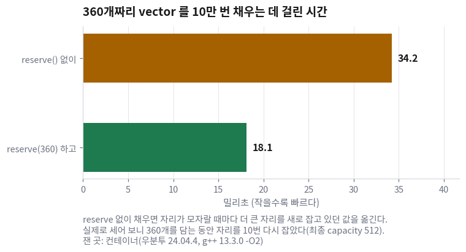

스마트 포인터와 컨테이너 — 누가 주인이고, 어디에 담나
- 손으로 만든 것을 언제 정리해야 하나? — 그 질문을 아예 안 하게 만드는 방법이 있다
unique_ptr와shared_ptr중 무엇을 고르나?- ROS 2 코드에 늘 보이는
SharedPtr은 무엇인가? reserve()한 줄이 실제로 얼마나 이득인가?
C++에는 이 언어 전체를 관통하는 한 문장이 있다. 중괄호를 벗어나면 뒷정리가 자동으로 된다. 파일을 열었으면 닫히고, 잠금을 걸었으면 풀린다. 사람이 닫으라고 쓰지 않아도 그렇게 된다.
오늘 배우는 스마트 포인터는 그 원리를 「메모리」에 적용한 것이다. 손으로 만든 물건을 손으로 치우는 대신, 치우는 일을 물건 자신에게 맡긴다. 이름이 거창하지만 하는 일은 그것 하나다.
뒤쪽 절반은 값을 담는 그릇이다.
이 과목에서 쓰는 그릇은 사실상 std::vector 하나이고,
그 하나를 제대로 쓰는 법이 나머지 전부보다 중요하다.
오늘도 주장에는 숫자를 붙인다 — reserve() 한 줄이 몇 배인지 재서 확인한다.
한 장 요약 — 학기가 끝나도 이 표만 남으면 된다 🟡 맡기되 검사
무엇을 먼저 볼지: 가운데 「언제 쓰나」 열만 읽어도 판단이 선다.
| 이걸 쓴다 | 언제 쓰나 | 수준 |
|---|---|---|
std::make_unique<T>(...) | 기본값. 손으로 만든 것을 담을 때. 주인이 하나다 | [요구] |
std::make_shared<T>(...) | 같은 것을 여러 곳이 나눠 가져야 할 때만 | [판단] |
new / delete | 쓰지 않는다. 짝을 맞추는 일을 사람이 하면 언젠가 어긋난다 | [요구] |
std::vector<T> | 기본값. 개수가 실행 중에 정해지거나 바뀔 때 | [요구] |
std::array<T, N> | 개수가 코드에 이미 적혀 있을 때 (바퀴 4개, 좌표 3개) | [판단] |
v.reserve(n) | 몇 개 들어올지 알 때. 담기 시작하기 전에 한 줄 | [요구] |
for (const auto & x : v) | 기본값. 그릇을 읽으면서 한 바퀴 돌 때 | [요구] |
① 뒷정리를 사람이 하면 언젠가 빠뜨린다 🟡 맡기되 검사
언제 이게 필요해지나
센서 하나를 켜고, 상태를 확인하고, 문제가 있으면 그만두는 코드를 짠다고 하자. 센서 객체는 함수 안에서 만들어 쓰고 끝나면 치워야 한다.
void setup()
{
Sensor * s = new Sensor("라이다"); // 손으로 만들었다
if (!s->ok()) {
return; // ← 여기서 나가면 delete 를 못 한다
}
s->start();
delete s; // 잊으면 새고, 두 번 부르면 부서진다
}무엇이 문제인가
이 코드에는 오류가 없다. 컴파일되고, 대부분의 경우 잘 돈다.
문제는 가운데 return 한 줄이다.
| 어떤 길로 나가나 | 무슨 일이 나나 |
|---|---|
| 끝까지 간다 | delete가 불린다. 정상 |
가운데에서 return | delete를 지나치고 나간다. 메모리가 샌다 |
| 중간에서 예외가 난다 | 역시 delete를 지나친다. 같은 문제 |
| 나중에 누가 줄을 하나 더 넣는다 | 그 줄이 return이면 또 새기 시작한다 |
새는 메모리는 화면에 아무것도 안 띄운다. 프로그램은 계속 돈다. 노트북에서 몇 분 돌려서는 아무 일도 안 일어난다. 로봇 위에서 몇 시간 도는 노드에서만 드러난다. 그래서 이것은 실력 문제가 아니라 구조 문제다. 사람이 짝을 맞추는 한 언젠가 틀린다.
이렇게 말하면 된다
new와 delete를 쓰지 말고 std::make_unique로 바꿔 줘. 함수 중간에서 return해도 정리가 되게 해 줘.
void setup()
{
auto s = std::make_unique<Sensor>("라이다");
if (!s->ok()) {
return; // 여기서 나가도 알아서 정리된다
}
s->start();
} // 중괄호를 벗어나는 순간 끝. delete 가 없다🆕 이 코드에서 처음 나오는 것
- std::unique_ptr<T>
- 물건 하나를 혼자 책임지는 손잡이다.
이 손잡이가 사라질 때 물건도 같이 정리된다.
여기서는
setup()의 중괄호를 벗어날 때Sensor가 정리되게 하는 데 썼다. - std::make_unique<T>(...)
unique_ptr를 만드는 정식 방법이다. 꺾쇠 안이 무엇을 만들지, 괄호 안이 그것을 만들 때 줄 값이다. 여기서는Sensor("라이다")를 만들어 손잡이에 끼웠다.new라는 단어가 코드에서 사라지는 것이 요점이다.
delete가 없어졌다는 것 하나다.
없어진 줄은 잊을 수 없다. 이것이 이득의 전부이고, 충분히 크다.
한 줄 점검
받은 코드에 new나 delete가 남아 있나?
② 주인이 하나면 unique_ptr, 나눠 가지면 shared_ptr 🟡 맡기되 검사
손잡이는 두 종류다. 고르는 기준은 성능이 아니라 "이 물건의 주인이 몇인가"다. 말로만 하면 안 와닿으므로 켜지고 꺼지는 것을 직접 출력하는 프로그램을 만들어 돌렸다. 오늘 나오는 두 프로그램 중 첫 번째다.
#include <iostream>
#include <memory>
#include <string>
#include <vector>
class Sensor {
public:
explicit Sensor(std::string n) : n_(std::move(n)) { std::cout << " [" << n_ << " 켜짐]\n"; }
~Sensor() { std::cout << " [" << n_ << " 꺼짐]\n"; }
const std::string & name() const { return n_; }
private:
std::string n_;
};
int main()
{
std::cout << "① unique_ptr — 주인이 하나다\n";
{
std::unique_ptr<Sensor> a = std::make_unique<Sensor>("라이다");
std::cout << " a 가 가리키는 것: " << a->name() << "\n";
std::unique_ptr<Sensor> b = std::move(a); // 주인이 바뀐다. 복사는 안 된다
std::cout << " 넘긴 뒤 a 는 비었나? " << (a == nullptr ? "그렇다" : "아니다") << "\n";
std::cout << " 이제 주인은 b: " << b->name() << "\n";
}
std::cout << " 중괄호를 나오면 delete 를 안 써도 꺼졌다\n\n";
std::cout << "② shared_ptr — 여럿이 나눠 가진다. 마지막이 끄고 나간다\n";
{
std::shared_ptr<Sensor> p1 = std::make_shared<Sensor>("카메라");
std::cout << " 주인 수 = " << p1.use_count() << "\n";
{
std::shared_ptr<Sensor> p2 = p1; // 복사가 된다. 세는 숫자가 는다
std::cout << " 주인 수 = " << p1.use_count() << " (p2 가 생겼다)\n";
}
std::cout << " 주인 수 = " << p1.use_count() << " (p2 가 사라졌다)\n";
}
std::cout << "\n③ ROS 2 의 SharedPtr 은 별명일 뿐이다\n";
std::cout << " Sensor::SharedPtr 같은 이름은 std::shared_ptr<Sensor> 를 줄여 쓴 것이다\n";
return 0;
}🆕 이 코드에서 처음 나오는 것
- std::shared_ptr<T>
- 물건 하나를 여럿이 나눠 가지는 손잡이다. 손잡이가 몇 개 살아 있는지를 어딘가에 세어 두고, 마지막 하나가 사라질 때 물건을 정리한다.
- std::make_shared<T>(...)
shared_ptr를 만드는 정식 방법이다. 쓰는 모양은make_unique와 같다.- p1.use_count()
- 지금 이 물건을 몇 명이 잡고 있는지 알려 준다.
여기서는
p2가 생기고 사라질 때 이 숫자가 어떻게 변하는지 보려고 썼다. - explicit Sensor(std::string n)
- 생성자 앞의
explicit는 "몰래 자동 변환되지 말라"는 표시다. 이게 없으면Sensor s = "라이다";같은 줄이 조용히 통과한다. 생성자에 붙여 두면 손해가 없어서 붙이는 것이 기본이다. - const std::string & name() const
- 함수 이름 뒤에 붙은
const는 "이 함수는 객체의 상태를 안 바꾼다"는 약속이다. 지금은 모양만 봐 두면 된다.
제대로 다루는 곳: 14회(const 정확성 — 함수 뒤에 붙는 const)
컨테이너에서 빌드해 돌린 결과다.
$ g++ -std=c++17 -O2 -o smart_ptr smart_ptr.cpp && ./smart_ptr
① unique_ptr — 주인이 하나다
[라이다 켜짐]
a 가 가리키는 것: 라이다
넘긴 뒤 a 는 비었나? 그렇다
이제 주인은 b: 라이다
[라이다 꺼짐]
중괄호를 나오면 delete 를 안 써도 꺼졌다
② shared_ptr — 여럿이 나눠 가진다. 마지막이 끄고 나간다
[카메라 켜짐]
주인 수 = 1
주인 수 = 2 (p2 가 생겼다)
주인 수 = 1 (p2 가 사라졌다)
[카메라 꺼짐]
③ ROS 2 의 SharedPtr 은 별명일 뿐이다
Sensor::SharedPtr 같은 이름은 std::shared_ptr<Sensor> 를 줄여 쓴 것이다unique_ptr는 복사가 안 되고
넘기면 주인이 바뀐다. 넘겨준 쪽은 nullptr이 된다.
둘째, 주인 수가 1 → 2 → 1로 변하는 세 줄 — 안쪽 중괄호에서
p2가 생겼다 사라지는 동안 숫자가 오르내린다.
셋째, 「꺼짐」이 찍히는 위치 — delete를 한 번도 안 썼는데
중괄호를 나올 때마다 꺼졌다.

unique_ptr, 여럿이면 shared_ptr다.
화살표가 몇 개인지는 코드를 짜는 사람이 정하는 것이지 라이브러리가 정해 주지 않는다.
③ AI는 뭐든지 shared_ptr로 만든다 🔴 사람이 한다
이것이 이 회차에서 AI가 가장 자주 하는 실수다.
"메모리를 안전하게 관리해 줘"라고 하면 대부분 shared_ptr이 온다.
돌아간다. 새지도 않는다. 그런데 대개 필요 없는 선택이다.
shared_ptr은 손잡이가 몇 개인지 세는 일을 계속 한다.
그 숫자는 여러 스레드가 동시에 건드려도 안전하게 세야 하므로,
손잡이를 만들고 없앨 때마다 보통 변수를 더하고 빼는 것보다 비싼 방식으로 세어진다.
unique_ptr에는 그 숫자 자체가 없다.
비용보다 더 중요한 것은 코드가 말하는 내용이다.
shared_ptr이 보이면 읽는 사람은 "이건 여러 곳이 같이 쓰는구나"라고 이해한다.
실제로는 한 곳만 쓰는데 shared_ptr이면, 코드가 거짓말을 하고 있는 것이다.
무엇을 먼저 볼지: 왼쪽 두 질문에 답하는 순서가 곧 고르는 순서다.
| 주인이 몇인가 | 다른 곳에 넘길 일이 있나 | 고를 것 |
|---|---|---|
| 하나 | 없다 | 손잡이 자체가 필요 없다. 그냥 멤버 변수로 갖는다 |
| 하나 | 있다 (만든 곳과 쓰는 곳이 다르다) | std::unique_ptr — 넘길 때 std::move |
| 여럿 | — | std::shared_ptr |
| 여럿인데 서로를 가리킨다 | — | 여기서 멈추고 설계를 다시 본다. 서로 잡고 있으면 아무도 안 꺼진다 |
std::unique_ptr<Sensor>가 아니라
Sensor 자체를 멤버로 두면 된다.
"포인터를 안전하게 만드는 법"보다 "포인터를 안 쓰는 법"이 먼저다.
shared_ptr을 쓴 자리마다 주인이 정말 여럿인지 확인해 줘. 한 곳만 쓰는 것은 unique_ptr로 바꾸고, 왜 바꿨는지 한 줄씩 적어 줘.
④ ROS 2의 SharedPtr은 새로운 것이 아니라 별명이다 🟡 맡기되 검사
ROS 2 코드를 열면 이런 이름이 계속 나온다.
sensor_msgs::msg::LaserScan::SharedPtr msg;
처음 보면 ROS가 만든 특별한 포인터처럼 보인다. 아니다.
rclcpp(ROS 2의 C++ 라이브러리)가 메시지 타입마다 붙여 놓은 짧은 별명일 뿐이다.
아래 두 줄은 완전히 같은 뜻이다.
sensor_msgs::msg::LaserScan::SharedPtr msg; // ROS 코드에서 보는 모양
std::shared_ptr<sensor_msgs::msg::LaserScan> msg; // 실제로는 이것별명을 붙인 이유는 짧게 쓰기 위해서다. 아래 줄은 너무 길다. 그래서 오늘 배운 것을 알면 ROS 2 코드의 이 부분은 따로 배울 것이 없다.
메시지가 왜 나눠 가지는 물건인지도 이유가 있다. 라이다 메시지 하나가 도착하면 그것을 받는 곳이 여러 군데일 수 있다. 누가 마지막까지 쓰는지 미리 알 수 없으므로, 마지막이 끄고 나가는 방식이 맞는 자리다. 20회에서 콜백의 인자로 이 이름을 직접 만난다.
⑤ 그릇은 vector 하나로 시작한다 🟡 맡기되 검사
C++ 표준에는 값을 담는 그릇이 여러 개 있다. 이름을 다 외울 필요가 없다.
이 과목의 코드는 std::vector 하나로 전부 돌아간다.
라이다 값 360개도, 찾아낸 콘 목록도, 지나온 위치도 전부 vector에 담긴다.
딱 하나 갈라지는 자리가 있다. 개수가 코드에 이미 적혀 있는 경우다.
바퀴 4개, 좌표 3개처럼 절대 변하지 않는 개수라면 std::array가 맞다.
std::array<float, 4> wheel = {0.0f, 0.0f, 0.0f, 0.0f}; // 크기가 코드에 박혀 있다
std::vector<float> ranges(360, 1.0f); // 크기를 실행 중에 정한다
ranges.push_back(2.0f); // vector 는 이렇게 늘릴 수 있다
// wheel.push_back(...) // array 에는 이런 함수가 아예 없다🆕 이 코드에서 처음 나오는 것
- std::array<T, N>
- 크기가 꺾쇠 안에 숫자로 박혀 있는 그릇이다.
N이 컴파일할 때 정해지므로 실행 중에는 못 바꾼다. 여기서는 바퀴 4개처럼 개수가 변할 리 없는 것에 썼다. - ranges.push_back(2.0f)
- 그릇 맨 뒤에 값을 하나 더 붙인다.
vector에만 있고array에는 없다 — 크기가 고정이니 붙일 자리가 없기 때문이다.
실제로 돌려 보면 이렇게 나온다.
$ g++ -std=c++17 -O2 -Wall -o array_vs_vector array_vs_vector.cpp && ./array_vs_vector
array : 크기 4 (컴파일할 때 이미 정해졌다)
vector : 크기 360 (실행 중에 정했다)
vector : push_back 뒤 크기 361 (array 는 이렇게 늘릴 수 없다)무엇을 먼저 볼지: 맨 오른쪽 열이 고르는 기준이다.
| 그릇 | 크기가 정해지는 때 | 이 과목에서 쓰는 자리 |
|---|---|---|
std::vector<T> | 실행 중. 늘었다 줄었다 한다 | 기본값. 라이다 값 360개, 찾아낸 콘 목록 |
std::array<T, N> | 컴파일할 때. 못 바꾼다 | 바퀴 속도 4개, x·y·z 3개 |
C 스타일 배열 float a[4] | 컴파일할 때 | 쓰지 않는다. 크기를 물어볼 방법이 없어 실수가 난다 |
float a[4]는 자기 크기를 모른다.
함수에 넘기는 순간 개수 정보가 사라지므로 개수를 따로 들고 다녀야 하고, 그 짝이 어긋나면 범위를 넘는다.
vector와 array는 size()를 물어보면 답한다.
AI가 C 스타일 배열을 주면 그건 옛날 코드를 베낀 것이므로 바꿔 달라고 한다.
⑥ reserve() 한 줄이 1.89배다 🟡 맡기되 검사
언제 이게 필요해지나
라이다 값 360개 중 쓸 만한 것만 골라 다른 그릇에 담는 코드는 이 과목 어디에나 나온다.
담을 때는 push_back으로 하나씩 밀어 넣는다.
그런데 그릇은 처음에 비어 있다. 자리는 어디서 나오나?

size는 들어 있는 개수, capacity는 지금 잡아 둔 자리다.
이 이사가 공짜가 아니다. 새 자리를 잡고, 값을 옮기고, 옛 자리를 반납한다. 그리고 담는 동안 여러 번 일어난다. 얼마나 여러 번인지 세어 보는 것이 오늘의 두 번째 프로그램이다.
#include <chrono>
#include <cstdio>
#include <vector>
int main()
{
const int N = 360;
const int LOOPS = 100000;
size_t sink = 0;
auto t0 = std::chrono::steady_clock::now();
for (int k = 0; k < LOOPS; ++k) {
std::vector<float> v;
for (int i = 0; i < N; ++i) { v.push_back(0.5f); }
sink += v.size();
}
auto t1 = std::chrono::steady_clock::now();
const double no_res = std::chrono::duration<double, std::milli>(t1 - t0).count();
t0 = std::chrono::steady_clock::now();
for (int k = 0; k < LOOPS; ++k) {
std::vector<float> v;
v.reserve(N);
for (int i = 0; i < N; ++i) { v.push_back(0.5f); }
sink += v.size();
}
t1 = std::chrono::steady_clock::now();
const double res = std::chrono::duration<double, std::milli>(t1 - t0).count();
std::printf("reserve 없이 : %7.1f ms\n", no_res);
std::printf("reserve 하고 : %7.1f ms\n", res);
std::printf("차이 : %.2f배 (%d회 기준, sink=%zu)\n", no_res / res, LOOPS, sink);
// 자리를 몇 번 다시 잡는지도 세어 본다
std::vector<float> v;
size_t cap = v.capacity(); int grow = 0;
for (int i = 0; i < N; ++i) {
v.push_back(0.5f);
if (v.capacity() != cap) { cap = v.capacity(); ++grow; }
}
std::printf("360개를 담는 동안 자리를 %d번 다시 잡았다 (최종 capacity=%zu)\n", grow, v.capacity());
return 0;
}🆕 이 코드에서 처음 나오는 것
- v.reserve(n)
- 값
n개가 들어갈 자리를 미리 잡아 둔다. 값이 들어가는 것은 아니다 —size()는 그대로 0이다. 여기서는 360개가 들어올 것을 알고 있으므로 미리 잡았다. - v.capacity()
- 지금 잡아 둔 자리가 몇 개인지 알려 준다.
size()(들어 있는 개수)와 다르다. 여기서는 이 숫자가 언제 바뀌는지를 보고 이사 횟수를 셌다.
$ g++ -std=c++17 -O2 -o reserve_bench reserve_bench.cpp && ./reserve_bench
reserve 없이 : 34.2 ms
reserve 하고 : 18.1 ms
차이 : 1.89배 (100000회 기준, sink=72000000)
360개를 담는 동안 자리를 10번 다시 잡았다 (최종 capacity=512)
v.reserve(360); 한 줄뿐인데 1.89배가 났다.
capacity 가 왜 512인가
담은 것은 360개인데 잡힌 자리는 512개다. 152칸이 비어 있다. 이유는 자리를 늘리는 방식에 있다. 자리가 모자랄 때마다 대개 지금의 두 배로 늘린다. 1 → 2 → 4 → 8 → … 로 가면 360을 넘기는 첫 숫자가 512다.
그래서 이사 횟수가 10번이다. 빈 그릇에서 1칸을 잡는 것이 첫 번째이고, 거기서 512까지 두 배씩 아홉 번 더 늘어나 모두 열 번이다. 한 번 늘릴 때마다 있던 값을 전부 새 자리로 옮긴다. 왜 한 칸씩 안 늘리는지도 여기서 나온다 — 한 칸씩 늘리면 360개를 담는 데 359번 이사해야 한다.
reserve(360) 한 줄이 그 열 번을 0번으로 만든다.
그리고 몇 개가 들어올지는 코드를 짠 사람만 안다.
라이다 값이 360개라는 사실은 AI가 모른다. 알려 주면 그때부터 넣어 준다.
잰 곳: 컨테이너(우분투 24.04.4, g++ 13.3.0 -O2).
reserve를 넣어 줘. 몇 개가 들어올지는 원본 배열의 크기로 잡으면 돼. 숫자를 코드에 박지 말아 줘.
⑦ 한 바퀴 도는 코드에서 const auto &를 빼면 매 바퀴 복사가 난다 🔴 사람이 한다
언제 이게 필요해지나
그릇에 담은 것을 처음부터 끝까지 한 바퀴 도는 코드다. 보관해 둔 스캔들을 훑으면서 가까운 값이 몇 개인지 세는 상황을 생각하자. 담아 둔 것의 모양은 이렇다.
struct ScanMsg {
std::vector<float> ranges; // 거리 값 360개가 들어 있다
};
std::vector<ScanMsg> history; // 스캔 100개를 모아 두었다for (auto s : history) { // ← 한 바퀴마다 s 에 사본이 하나 만들어진다
sum += s.ranges[0];
}for (const auto & s : history) { // ← 이름표만 붙인다. 사본이 없다
sum += s.ranges[0];
}🆕 이 코드에서 처음 나오는 것
- for (const auto & x : v)
- 범위 기반 for다.
v에 담긴 것을 앞에서부터 하나씩x에 담아 준다. 번호를 세는 변수가 없으므로 범위를 넘어갈 자리 자체가 없다. 앞의const auto &가 "사본 만들지 말고 이름표만 붙여라"라는 뜻이다.
무엇이 문제인가
auto s와 const auto & s는 글자 여덟 개 차이다.
그런데 앞의 것은 한 바퀴마다 사본을 하나 만든다.
돌 것이 float 같은 작은 값이면 상관없다.
돌 것이 스캔 하나(값 360개)라면 이야기가 완전히 달라진다.
세어 봤다.
$ g++ -std=c++17 -O2 -Wall -o rangefor_copy rangefor_copy.cpp && ./rangefor_copy
for (auto s : history) : ScanMsg 복사 100회
for (const auto & s : history) : ScanMsg 복사 0회
스캔 100개를 한 바퀴씩 돌았다 (sum=200)sum)은 같다. 여기서도 맞지만 둔한 코드다.
잰 곳: 컨테이너(우분투 24.04.4, g++ 13.3.0 -O2).
무엇을 먼저 볼지: 맨 오른쪽 열에서 자기 상황을 찾는다.
| 이렇게 쓴다 | 무슨 일이 나나 | 언제 쓰나 |
|---|---|---|
for (const auto & x : v) | 사본 없음. 못 고침 | 기본값. 읽기만 할 때 |
for (auto & x : v) | 사본 없음. 고칠 수 있음 | 돌면서 값을 바꿔야 할 때 |
for (auto x : v) | 한 바퀴마다 사본 | float·int처럼 작은 값일 때만 |
auto 대신 const auto &를 써 줘. 값을 바꿔야 하는 자리만 auto &로 하고, 왜 그 자리만 그런지 알려 줘.
한 줄 점검
범위 for 에서 도는 것이 작은 값이 아닌데 const auto &가 아닌 자리가 있나?
🧪 실습 — 자리를 몇 번 다시 잡는지 직접 세어 본다
이걸 해 보면 무엇을 알게 되나:
delete 없이도 정리가 된다는 것을 눈으로 보고,
담는 개수를 열 배로 늘리면 이사 횟수가 어떻게 되는지를 확인한다.
준비물: WSL 터미널 한 칸, g++.
코드 두 개는 이 자료의 ②·⑥절에 전문이 있다. 복사해서 파일로 저장하면 된다.
절차
smart_ptr.cpp와reserve_bench.cpp를 같은 폴더에 저장한다. (3분)- 손잡이 쪽을 돌린다. 「꺼짐」이 어느 줄 다음에 찍히는지 확인한다. (5분)
g++ -std=c++17 -O2 -o smart_ptr smart_ptr.cpp ./smart_ptr - 그릇 쪽을 돌린다. 마지막 줄의 이사 횟수와 최종 capacity를 적어 둔다. (5분)
g++ -std=c++17 -O2 -o reserve_bench reserve_bench.cpp ./reserve_bench reserve_bench.cpp의 맨 위const int N = 360;을const int N = 3600;으로 바꾸고 다시 빌드해서 돌린다. (10분)- 3번과 4번의 이사 횟수와 최종 capacity를 나란히 적고, 개수를 열 배로 늘렸는데 이사가 왜 열 배가 되지 않는지 한 줄로 쓴다. (7분)
이렇게 되면 성공: 4번에서 이사 횟수가 10번에서 13번으로 늘고, 최종 capacity가 512에서 4096이 된다. 담는 개수는 열 배가 됐는데 이사는 세 번밖에 안 늘었다 — 두 배씩 늘리기 때문이다.
N을 3600으로 바꿔도 출력에는 「360개를 담는 동안」이라고 그대로 찍힌다.
그 숫자가 문장 안에 글자로 박혀 있기 때문이다.
볼 것은 「자리를 몇 번」과 「최종 capacity」 두 자리다.
그리고 이것이 코드에 숫자를 박아 두면 생기는 일의 아주 작은 예다.
📝 HW3 — 나은 쪽을 고르고 이유를 댄다 🔴 사람이 한다
아래는 같은 일을 하는 코드 두 개다. 스캔을 보관해 두었다가 가까운 값이 몇 개인지 세는 클래스다. 둘 다 컴파일되고, 둘 다 같은 답을 낸다.
class ScanKeeper {
public:
void add(ScanMsg msg)
{
history_.push_back(std::make_shared<ScanMsg>(msg));
}
int count_close(float limit)
{
int n = 0;
for (auto p : history_) {
for (float r : p->ranges) { if (r < limit) { ++n; } }
}
return n;
}
private:
std::vector<std::shared_ptr<ScanMsg>> history_;
};class ScanKeeper {
public:
void add(ScanMsg msg)
{
history_.push_back(std::make_unique<ScanMsg>(std::move(msg)));
}
int count_close(float limit)
{
int n = 0;
for (const auto & p : history_) {
for (float r : p->ranges) { if (r < limit) { ++n; } }
}
return n;
}
private:
std::vector<std::unique_ptr<ScanMsg>> history_;
};
두 코드를 한 파일에 넣고 복사 횟수를 세면서 돌려 봤다.
ScanMsg에는 복사될 때 숫자를 하나 올리는 코드가 들어 있다.
$ g++ -std=c++17 -O2 -Wall -o hw3_ab hw3_ab.cpp && ./hw3_ab
코드 A: 0.5m 안쪽 값 1800개, 그동안 ScanMsg 복사 5회
코드 B: 0.5m 안쪽 값 1800개, 그동안 ScanMsg 복사 0회
스캔 5개를 넣고 셌다. 두 코드가 낸 답은 같다.shared_ptr이 여기서 맞는 선택인지를 설명하는 것이다.
제출물
무엇을 먼저 볼지: 가운데 열이 실제로 쓸 내용이고, 오른쪽 열이 채점에서 보는 것이다.
| 항목 | 무엇을 쓰나 | 채점에서 보는 것 |
|---|---|---|
| ① 고른 코드 | A 또는 B 하나 | 고르기만 한 것에는 점수가 없다 |
| ② 이유 세 가지 | 줄 번호를 가리키며 무엇이 왜 다른지 | 「어느 줄」이 있나. "더 효율적이다"만 쓰면 감점 |
| ③ 복사 5회의 출처 | 그 5회가 어느 줄에서 났는지 | 스캔 5개를 넣었다는 사실과 연결했나 |
| ④ 반대 상황 | A가 더 나은 상황을 하나 지어내 설명 | shared_ptr이 맞는 자리를 아는가 |
| ⑤ AI 활용 기록 | 물어본 것과 그 답을 어떻게 확인했는지 | 확인 방법이 적혀 있나 |
shared_ptr은 나쁘다"고 배우면 그것도 틀린 것이다.
주인이 정말 여럿인 자리에서는 A의 방식이 유일한 답이다.
AI에게 "어느 쪽이 나아?"라고 묻고 그 답을 그대로 내는 것이다. AI는 B라고 답할 것이고 그 답은 맞다. 그런데 그것은 제출물이 아니다. 이 과제가 묻는 것은 당신이 그 이유를 코드의 어느 줄에서 읽어 냈는가다. 물어보는 것 자체는 괜찮다. 받은 답을 어떻게 확인했는지를 ⑤에 적으면 된다.
🤖 오늘 나온 프롬프트 모음
무엇을 먼저 볼지: 왼쪽 「이럴 때」를 먼저 읽는다. 상황을 알아보는 것이 문장을 외우는 것보다 먼저다.
| 이럴 때 | 이렇게 말한다 |
|---|---|
new·delete가 보일 때 | "new와 delete를 쓰지 말고 std::make_unique로 바꿔 줘. 함수 중간에서 return해도 정리되게 해 줘." |
shared_ptr이 여러 개 보일 때 | "shared_ptr을 쓴 자리마다 주인이 정말 여럿인지 확인해 줘. 한 곳만 쓰는 것은 unique_ptr로 바꿔 줘." |
| 담는 코드일 때 | "담는 코드 앞에 reserve를 넣어 줘. 개수는 원본 배열의 크기로 잡고, 숫자를 코드에 박지 말아 줘." |
| 반복문이 보일 때 | "범위 for 에서 auto 대신 const auto &를 써 줘. 값을 바꿔야 하는 자리만 auto &로 해 줘." |
| C 스타일 배열이 보일 때 | "float a[4] 같은 배열을 std::array나 std::vector로 바꿔 줘. 크기를 따로 들고 다니지 않게 해 줘." |
| 코드를 비교할 때 | "두 코드의 차이를 줄 단위로 짚어 줘. 어느 쪽이 낫다고 말하기 전에 각 줄에서 무슨 일이 나는지부터 설명해 줘." |
✅ 오늘의 점검
조금 더 알아두면 시험 범위 아님
make_shared가 shared_ptr(new T)보다 나은 이유
shared_ptr은 물건 말고 세는 숫자를 둘 자리도 따로 필요하다.
std::shared_ptr<Sensor> p(new Sensor("라이다"));라고 쓰면
자리를 두 번 잡는다 — 물건 한 번, 세는 숫자 한 번.
std::make_shared<Sensor>("라이다")는 둘을 한 번에 잡는다.
자리를 잡는 일이 한 번 줄고, 두 개가 붙어 있어 읽기도 빠르다.
쓰는 모양이 더 짧기까지 하므로 고민할 이유가 없다.
서로를 가리키면 아무도 안 꺼진다 (순환 참조)
shared_ptr은 세는 숫자가 0이 될 때 물건을 정리한다.
그런데 A가 B를 잡고 B가 A를 잡으면 둘 다 영원히 1 이상이다.
둘을 쓰던 코드가 다 끝나도 둘 다 안 꺼진다.
이것이 스마트 포인터를 쓰고도 메모리가 새는 거의 유일한 경우다.
해결하는 도구(std::weak_ptr)가 표준에 있지만,
이 과목의 코드에서는 그런 구조를 만들지 않는 것이 답이다.
서로를 가리키는 설계가 나오면 설계를 다시 보는 편이 빠르다.
list와 deque는 왜 안 다루나
C++ 표준에는 std::list·std::deque 같은 그릇이 더 있다.
중간에 값을 자주 끼워 넣거나 빼는 경우에 유리한 그릇들이다.
vector는 중간에 끼워 넣으면 뒤에 있는 값을 전부 한 칸씩 밀어야 하기 때문이다.
그런데 이 과목의 코드에는 그런 자리가 없다. 라이다 값은 통째로 왔다가 통째로 버려지고, 찾아낸 콘 목록은 뒤에만 붙는다. 중간에 끼워 넣는 코드를 우리는 한 줄도 쓰지 않는다.
그리고 값이 메모리에 나란히 붙어 있다는 점 때문에
vector는 한 바퀴 도는 일에서 특히 빠르다.
고민되면 vector다. 이 문장이 이 절의 전부다.
reserve와 resize는 다르다
이름이 비슷해서 AI도 가끔 바꿔 쓴다. 하는 일이 완전히 다르다.
v.reserve(360)— 자리만 잡는다.size()는 그대로 0이다. 이어서push_back으로 채운다.v.resize(360)— 값을 360개 만들어 채운다.size()가 360이 된다. 여기에push_back을 하면 361번째가 생긴다.
담을 준비를 하는 것이 목적이면 reserve다.
resize를 쓰고 push_back까지 하면 앞쪽 360칸이 0으로 채워진 채 남는다.
라이다 값 앞에 0이 360개 붙으면 가장 가까운 장애물이 0m가 된다.